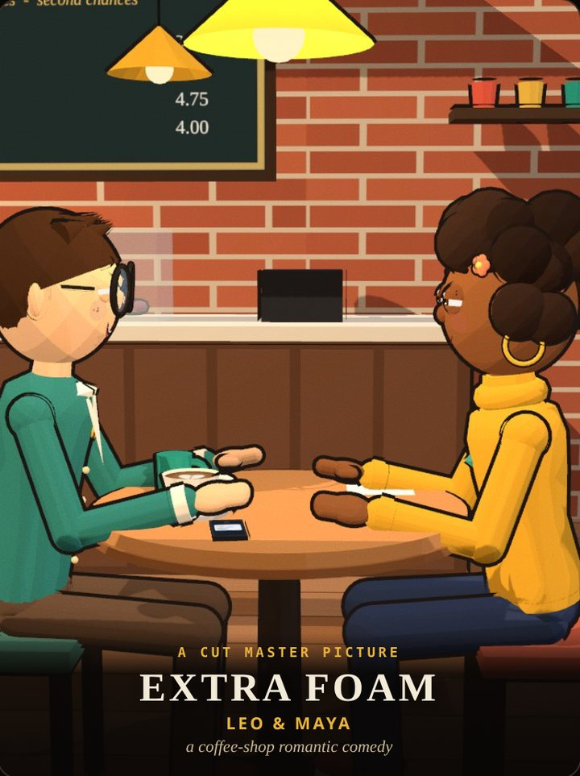
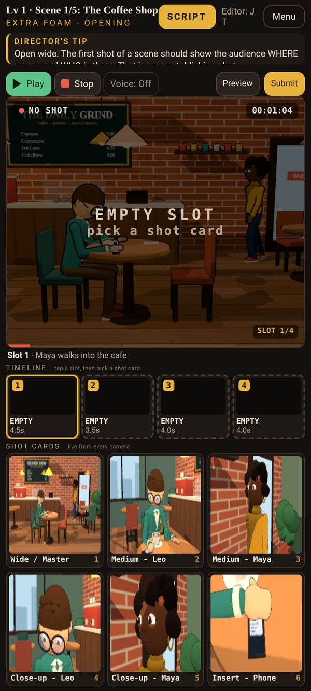
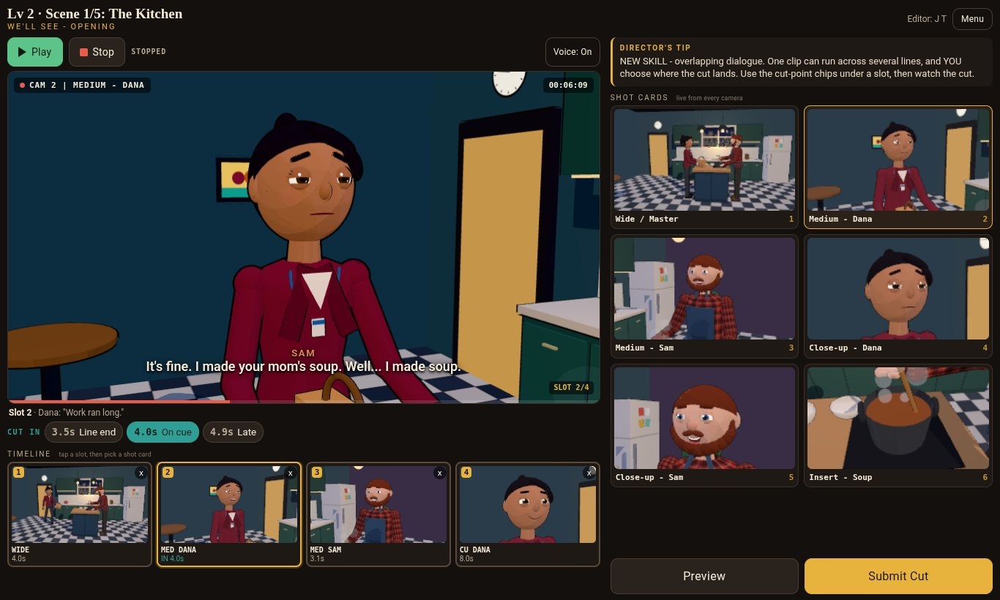
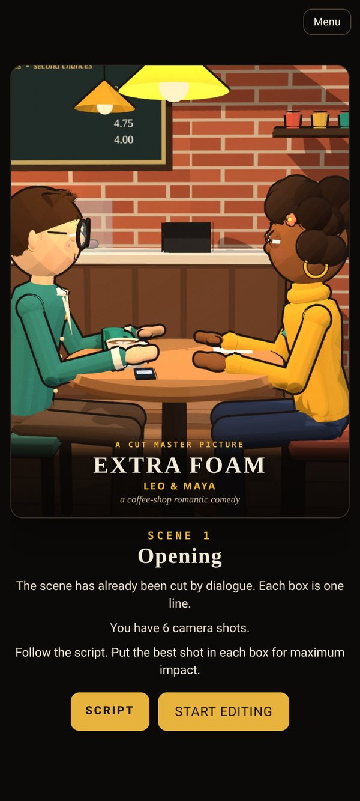
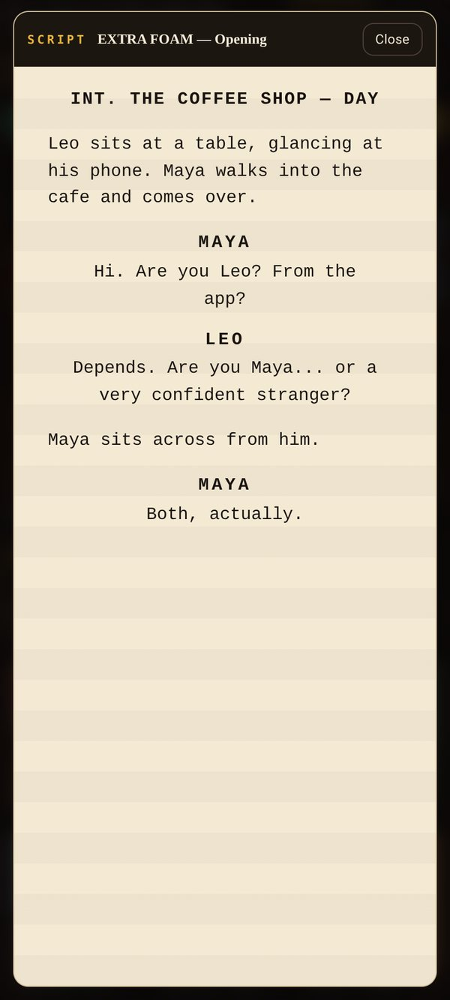
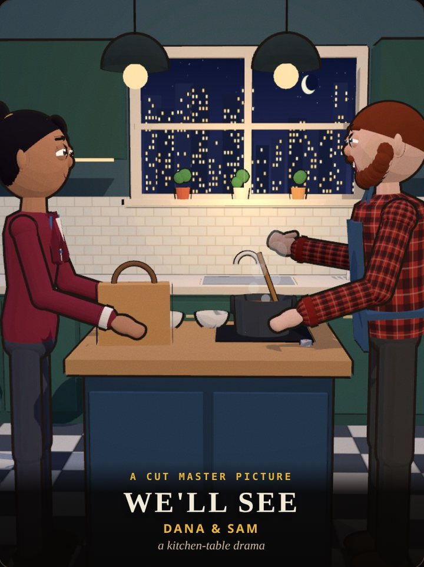
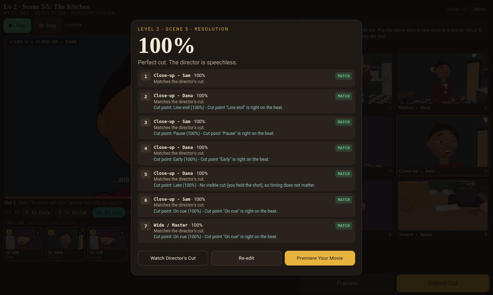
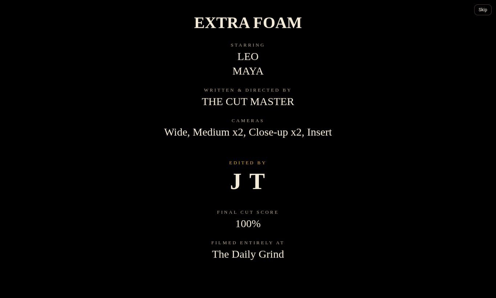

LEVEL 1
EXTRA FOAM
A coffee-shop romantic comedy · starring Leo & Maya
Five scenes of a first date. The skill: shot selection. When to go wide, when to go close, and when a prop needs an insert.
The scene is shot. The cut is yours.
Every scene is filmed by six cameras at once: a wide, two mediums, two close-ups and an insert. You decide which shot plays on every line of dialogue, then your edit is scored against the director's cut, shot by shot, with the reason behind every call.
For aspiring editors, film students, kids and anyone who loves movies.

01:00:04:12Who it's for
A masterclass in film editing you play with your thumbs. No software to learn, no footage to shoot.
01:00:11:20Not a quiz
Every slot is graded against the director's cut, and every grade comes with the editor's reasoning. Here is one moment from EXTRA FOAM, Scene 5.
PARTIAL. "You stayed on the speaker. The joke lands on the LISTENER: cut to Leo."
MATCH. "Matches the director's cut." The scene's Director's Tip: "The best cut is not always to the person talking. Sometimes the story is on the LISTENER'S face."
01:00:19:08Inside the app

The editing suite, shown with WE'LL SEE, a kitchen-table drama. Real in-game screenshot.

REEL 1
Each scene opens with the movie's poster and your brief. The scene has already been cut by dialogue: each box is one line.

REEL 2
The gold SCRIPT button opens the full screenplay over the screen, in proper script format, and closes right back.
REEL 3
Six live camera angles, one timeline. Tap a box, pick a shot, play it back. The screen stays locked so the whole suite fits in your hand.
01:00:31:16Now showing
Every film is a short story performed by fully animated 3D actors, with voices, timed dialogue and facial expressions. All six cameras roll on the same take, so every angle you pick stays in sync.


01:00:38:02The score
Submit your cut and see every slot graded MATCH, VALID ALT or PARTIAL, each with a line of editorial reasoning. Watch the director's cut, re-edit, and try again.
Finish all five scenes and your film premieres, start to finish, with your name under EDITED BY.

01:00:46:10The campaign
The full campaign is a journey through film history, from the first cuts of the 1890s to the 2020s. Each level teaches the next technique editors discovered, one invention at a time, with a short history card after every level. No skipping ahead: finish the campaign and you'll know why every technique exists.
01:00:54:18Festival season
Medals are awarded by tier on your average score for each film, so everyone who reaches a tier earns it. Replay any film to chase gold, and fill your trophy case.
The top tier. Replay a film as often as you like to reach it, or go for all gold.
A strong cut, close to the director's.
You made the film. Now find the cuts you missed.
Every medal you've won, film by film, in one place.

01:01:03:06After the masterclass
Complete all 64 levels and you earn your diploma. Then the work starts: career mode hires you for jobs, genre by genre, starting with the genre you scored best in and working down to your toughest, so you end up cutting everything from action to horror.
You don't pick the gig. The studio calls you.
01:01:10:14How it works
Open the scene card and the script. Know what every line is, and what comes next.
Fill each box with one of six camera shots. Preview the whole scene as often as you want.
Submit, get scored against the director's cut, and watch your finished film with your name in the credits.
01:01:17:22Questions
No. Every scene opens with a brief, a director's tip and the full script. The game teaches the technique, and every score explains the choices behind the director's cut.
Short scenes performed by animated 3D actors and filmed by six virtual cameras on the same take: a wide, a medium and a close-up on each actor, and an insert of the key prop. You choose which shot plays on every line.
Shot by shot against the director's cut. Some slots have more than one valid answer, and later levels also score when your cut lands, not just which shot you picked.
Yes. Re-edit any scene, watch the director's cut, and replay a film to earn a better medal.
It's a game app for iPhone and Android phones, from the App Store and Google Play.
April 1, 2027.
01:01:24:00About
THE CUT MASTER comes from Trevinium Inc., the studio of John Treviño, a Hollywood-trained filmmaker with credits in features, network television and commercials, an MFA from Chapman University Film School and a Lone Star Emmy nomination. He has taught film at the university level.
He built THE CUT MASTER to teach the most invisible art in movies the way it's learned in the edit bay: one cut at a time.
04.01.27Release
The game app comes to iOS and Android on April 1, 2027.